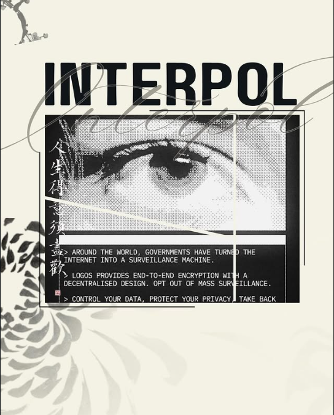
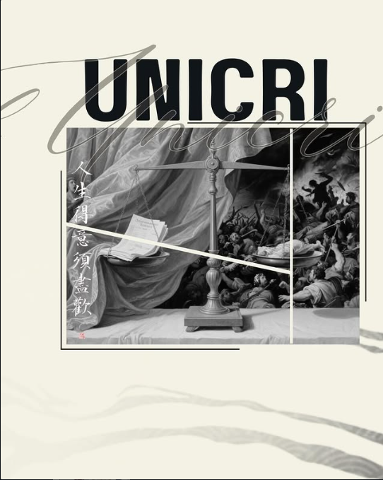
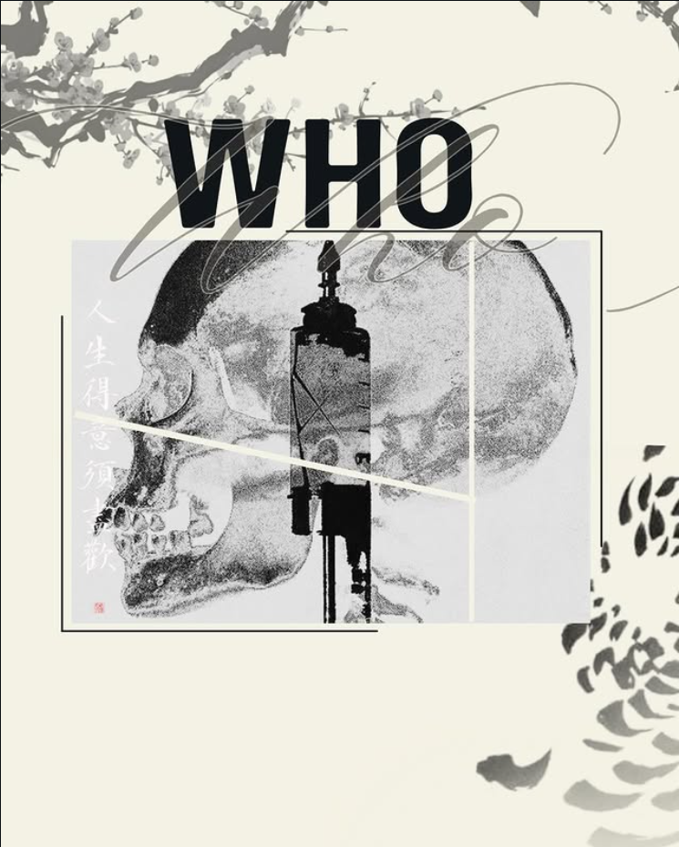
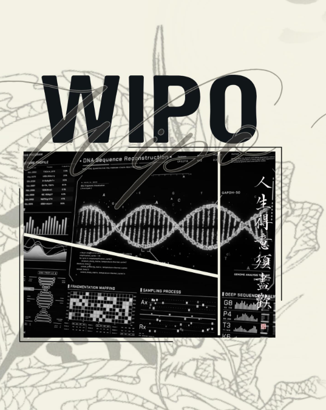
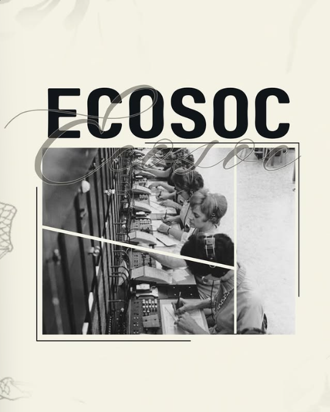
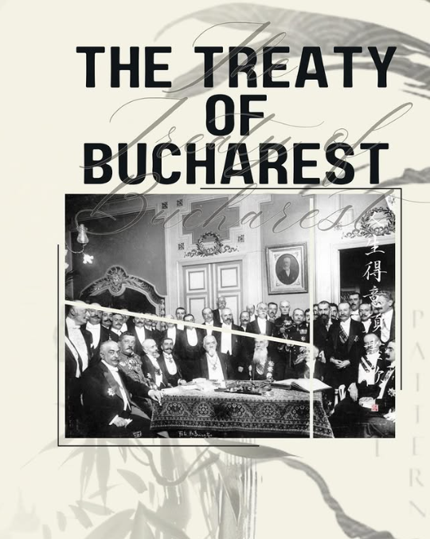
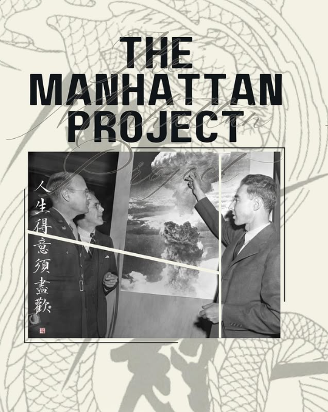
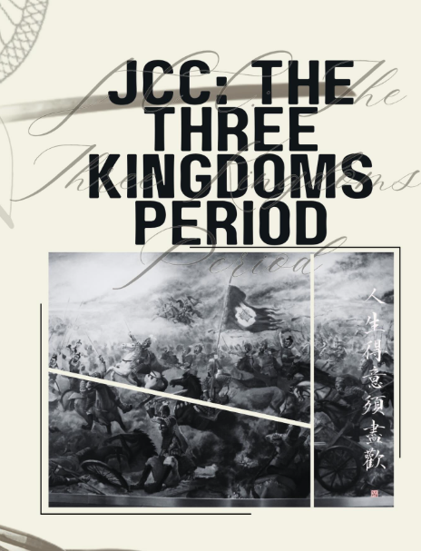

Our Committees









Welcome To
Timeless Voices for Peace
Letter From Our Secretary General
Honourable Participants of IONMUN'26
As the Secretary General of IONMUN'26, which takes place from the 1st of August to the 3rd of August, I welcome you all to a once in a lifetime experience known as IONMUN.
Me and our executive board aim to bring together enthusiastic and devoted people eager to experience the best illustration of diplomacy. During the trail we took in this circuit, we have worked so hard and diligently to make this conference a reality. With the knowledge and experience we have gained, we want to lead you on your journey and feel the happiness we did when we were creating this conference.
With a mix of experience and the enthusiasm of new generation of academic members, we profoundly believe that IONMUN will give you an unprecedented experience for all of the participants of the conference. The sophisticated members of our academic team emit their profound knowledge while even more recent members bring newer concepts and creativity.
My deepest gratitude goes to our organization team who worked the hardest, our academic team that brings their knowledge to the table and lastly my beloved executive board which consists of Ela Nur Sapmaz, Mustafa Aslan and Can Kurnaz.
As we assemble let me quote a saying by the greatest leader that this world has ever seen, Mustafa Kemal Atatürk:
"Ey Türk gençliği! Birinci vazifen, Türk istiklâlini, Türk Cumhuriyeti'ni, ilelebet muhafaza ve müdafaa etmektir. Mevcudiyetinin ve istikbalinin yegâne temeli budur. Bu temel, senin en kıymetli hazinendir."
To everybody who is excited and keen to take part in my dream, I can't wait to see everybody work tirelessly and embrace such a conference. Fog can't be dispelled by means of a fan. And guided by timeless voices for peace.
Sincerely,
The Secretary General
Doruk Sapmaz







